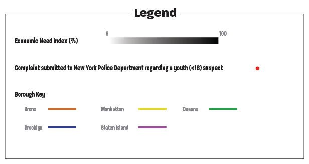

[1, 2, 3, 4, 5]
[6, 7]
[1] New York City Police Department. 2018. NYPD Complaint Data Current (Year to Date). Retrieved June 23, 2024 from https://data.cityofnewyork.us/Public-Safety/NYPD-Complaint-Data-Current-Year-To-Date-/5uac-w243/about_data
[2] New York City Department of Education. 2021. 2020-2021 Demographic Snapshot District. Retrieved June 23, 2024 from https://data.cityofnewyork.us/Education/2020-2021-Demographic-Snapshot-District/mc73-t4fs/about_data
[3] New York City Department of City Planning. 2013. School Districts. Retrieved June 26, 2024 from https://data.cityofnewyork.us/Education/School-Districts/r8nu-ymqj
[4] New York City Department of City Planning. 2013. Borough Boundaries. Retrieved June 26, 2024 from https://data.cityofnewyork.us/City-Government/Borough-Boundaries/tqmj-j8zm
[5] New York City Public Schools. 2023. How is NYC divided into school districts? Retrieved June 27, 2024 from https://teachnyc.zendesk.com/hc/en-us/articles/360043956952-How-is-NYC-divided-into-school-districts
[6] luisrftc. Map of New York city. Retrieved June 27, 2024 from https://stock.adobe.com/ca/search?k=new+york+city+boroughs+map&asset_id=282839600
[7] Selena A. Lee. 2024. NYC: Economic Need of Public School Students vs NYPD Complaints of Youth Offenders.